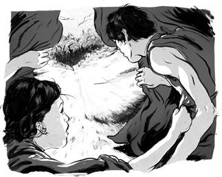
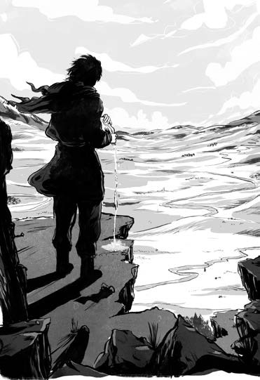

Dành tặng Jessica và Katherine chuyến phiêu lưu tuyệt thú trần đời – NM
Dành tặng Rhia, Cha, Mẹ và Dai yêu quý - AT.
Đó là năm 1179. Chàng trai trẻ Thiết Mộc Chân đang say giấc trong chiếc lều nỉ bên cạnh người vợ Bột Nhi Thiếp.
Chiếc lều tròn có tên ger, nằm trơ trọi trên thảo nguyên - vùng đồng cỏ mênh mông trên cao nguyên Mông Cổ. Thiết Mộc Chân và Bột Nhi Thiếp sinh sống cùng khoảng mười ba người trong bộ lạc.
Hầu hết các bộ lạc sống gần nhau, tạo thành những bộ tộc lên tới hàng nghìn người. Nhưng bộ lạc của Thiết Mộc Chân lại sống đơn độc và tách biệt.
Ngày hôm ấy, một bà lão trong bộ tộc bị đánh thức bởi những âm thanh rung chuyển mặt đất.
Tiếng vó ngựa đang tới mỗi lúc một gần hơn.

Bà hô lên đánh thức mọi người. Có kẻ đang đến!
Ba trăm người đàn ông cưỡi ngựa từ bộ tộc Miệt Nhi Khất đang phi nước đại tới ger của Thiết Mộc Chân. Mười tám năm trước, cha của Thiêt Mộc Chân là Dã Tốc Cai đã bắt cóc mẹ cậu từ tay một người Miệt Nhi Khất. Lúc này, khi Thiết Mộc Chân đã lớn, người Miệt Nhi Khất muốn trả thù.
Bộ lạc của Thiết Mộc Chân phải tháo chạy nhưng lại không đủ ngựa cho tất cả. Trong cơn hoảng loạn, Bột Nhi Thiếp đã bị bắt đi.
Thiết Mộc Chân cùng mọi người phi ngựa xuyên đêm tới ngọn núi phía Bắc bởi thảo nguyên bao la không có chốn trú thân an toàn.
Người Miệt Nhi Khất truy lùng Thiết Mộc Chân ráo riết trong nhiều ngày liền. Nhưng cuối cùng, họ phải bỏ cuộc trở về đem theo Bột Nhi Thiếp làm tù nhân.
Thiết Mộc Chân trèo lên đỉnh núi Burkhan Khaldun, ngọn núi thiêng của người Mông Cổ. Họ thờ mặt đất, bầu trời và Mặt trời. Burkhan Khaldun là đỉnh núi cao nhất trong vùng và là nơi gần bầu trời nhất.
Để cảm tạ các vị thần đã bảo vệ mình, Thiết Mộc Chân vẩy sữa lên không trung và mặt đất. Suốt ba ngày, cậu cầu xin các vị thần linh dẫn lối cho mình.

Ba dòng sông chảy từ ngọn núi thiêng, tựa như ba sự lựa chọn dành cho Thiết Mộc Chân. Cậu có thể theo một dòng sông chảy hướng đông nam để trở lại ger. Nhưng cậu sẽ khó tránh khỏi nguy hiểm nếu đơn độc trên thảo nguyên. Dòng sông Onon chảy hướng đông bắc, sẽ đưa Thiết Mộc Chân trở về khu rừng nơi cậu từng lớn lên, săn bắt chim thú. Nhưng cậu không hề muốn quay lại sống như vậy.
Thiết Mộc Chân quyết định đi theo dòng sông thứ ba. Cậu đi về phía tây nam, nơi bộ tộc Khắc Liệt sinh sống.
Người Khắc Liệt hợp lực với Thiết Mộc Chân tấn công Miệt Nhi Khất và giải cứu Bột Nhi Thiếp.
Nhưng đó mới chỉ là sự khởi đầu.
Hai mươi bảy năm sau, Thiết Mộc Chân đã thống nhất tất cả các bộ tộc trên thảo nguyên. Ông chính là Thành Cát Tư Hãn, người cai trị toàn cõi Mông Cổ, và là người chinh phạt của đế chế có lãnh thổ rộng lớn nhất từ trước đến nay.